측량및지형공간정보기사 (2006-05-14 기출문제)
1과목: 측지학 및 위성측위시스템
1. 지구 표면의 거리 100km까지를 평면으로 간주했다면 허용 정밀도는 약 얼마인가? (단, 지구의 반경은 6370km이다.)
- 1/50,000
- 1/100,000
- 1/500,000
- 1/1,000,000
(정답률: 91%)

2. 삼각측량에 대한 설명 중 잘못된 것은?
- 삼각망의 계산은 지오이드 상에서 실시한다.
- 삼각점은 원칙적으로 그 점을 지나는 타원체의 법선에 의해 타원체 상에 투영된다.
- 지상에서 적당한 밀도로 배치된 삼각점을 정점으로 하는 삼각형으로 구성된 삼각망에서 수평각을 관측하여 삼각점의 수평위치를 구한다.
- 삼각점의 경위도, 원점으로부터 어느 삼각점 방향의 방위각, 기선의 길이 등의 정보가 필요하다.
(정답률: 82%)
3. 지구상의 어떤 한 점에서 지오이드에 대한 연직선이 천구의 적도면과 이루는 각을 말하는 것은?
- 지심위도
- 천문위도
- 측지위도
- 화성위도
(정답률: 93%)
4. 넓은 지역의 지도제작시 측량지역의 지오이드에 가장 가까운 타원체를 선정한다. 이 때 그 지역의 측지계의 기준이 되는 지구 타원체는?
- 준거타원체
- 회전타원체
- 지구타원체
- 국제타원체
(정답률: 77%)
5. 다음 중 지자기를 나타내는 단위는?
- mGal
- Gauss
- Newton
- Watt
(정답률: 91%)
6. 다음 설명 중 옳지 않은 것은?
- 탄성파의 측정법은 지진조사, 광물탐사에 이용되는 것으로서 지표면으로부터 낮은 곳은 반사법, 깊은 곳은 굴절법을 주로 사용한다.
- UT2는 UT1에 지구 자전속도의 변동에 관한 계절적 변화를 보정한 것이다.
- 인공위성 관측장치에는 방향 관측용 위성 카메라, 레이저 거리 측정 장치 및 전파거리 측정 장치 등이 있다.
- 해상위치 결정방법에는 정자항법, 천문항법, 전파항법, 위성항법 등이 있다.
(정답률: 79%)
7. 중력측정을 하여 지질구조를 찾을 때 설명으로 옳은 것은?
- 측정중력을 평균 해수면에서의 중력치로 보정해야 한다.
- 측정중력을 위도에 따른 표면장력으로 환산하여야 한다.
- 측정중력을 보정할 필요없이 그대로 사용한다.
- 측정중력은 지표면 상태를 고려해야 한다.
(정답률: 93%)
8. 단독측위, DGPS, RTK-GPS 등에 관한 설명으로 옳지 않은 것은?
- 단독측위시 많은 수의 위성을 동시에 관측할 때 위성의 궤도정보에 대한 오차는 측위결과에 영향이 없다.
- DGPS는 신점과 기지점에서 동시에 관측을 실시하여 양 점에서 관측한 정보를 모두 해석함으로써 신점의 위치를 결정한다.
- RTK-GPS는 위성신호 중 반송파 신호를 해석하기 때문에 코드 신호를 해석하여 사용하는 DGPS보다 정확도가 높다.
- RTK-GPS는 공공측량시 3, 4급 기준점측량에 적용할 수 있다.
(정답률: 84%)
9. 위성 자체에 전파원이 있는 것이 아니라 반사프리즘이 위성에 탑재되어 펄스광의 왕복시간을 측정함으로써 거리를 측량하게 할 수 있는 관측법은?
- 전파 관측법
- 음파 관측법
- 레이저 관측법
- 카메라 관측법
(정답률: 90%)
10. 다음 지자기 측정에 대한 설명 중 틀린 것은?
- 지자기변화에는 주기적 변화와 불규칙 변화가 있다.
- 영년변화는 수백년을 주기로 나타나는 지자기의 변화이다.
- 자기 폭풍은 지진에 의해 발생한다.
- 자기 폭풍은 단파 통신의 지장을 초래한다.
(정답률: 93%)
11. 기종이 서로 다른 GPS 수신기를 혼합하여 관측하였을 경우 수집된 GPS 데이터의 기선 해석이 용이하도록 고안된 세계 표준의 GPS 데이터의 자료형식은?
- RINEX
- DXF
- DWG
- RTCM
(정답률: 86%)
12. UTM 좌표에 관하여 잘못 설명한 것은?
- 한 구역은 경도 6°의 크기이다.
- 거리좌표는 m단위이다.
- 중ㆍ소축척의 지도좌표로 많이 이용된다.
- 중앙자오선 상에서의 축척계수는 2.0이다.
(정답률: 47%)
13. 다음의 GPS 오차원인 중 L1신호와 L2신호의 굴절 비용의 상이함을 이용하여 L1/L2의 선형 조합을 통해 보정이 가능한 것은?
- 전리층 지연오차
- 위성시계오차
- GPS 안테나의 구심오차
- 다중전파경로(멀티패스)
(정답률: 92%)
14. DOP(Dilution of Precision)에 대한 설명 중 적당하지 않은 것은?
- 높은 DOP는 위성의 기하학적인 배치 상태가 나쁘다는 것을 의미한다.
- 수신기를 가운데 두고 4개의 위성이 정사면체를 이룰 때, 즉 최대 체적일 때 GDOP, PDOP 등이 최소가 된다.
- DOP 상태가 좋지 않을 때는 정밀 측량을 피하는 것이 좋다.
- DOP 수치가 클 때는 DGPS 방법을 이용하여 관측하여야 한다.
(정답률: 88%)
15. 다음의 RTK-GPS에 의한 지형측량 방법의 설명 중 옳지 않은 것은?
- RTK-GPS에 의한 지형측량시 기준점과 관측점 간의 시통이 양호한 경우에는 상공 사계의 확보가 필요없다.
- RTK-GPS에 의한 지형측량시 기준점과 관측점 간에는 관측데이터를 전송하기 위한 통신장치가 필요하다.
- RTK-GPS에 의한 지형측량시 관측점의 위치가 즉시 결정되기 때문에 현장에서 휴대용 PC상에 측정결과를 표시하여 확인하는 것이 가능하다.
- RTK-GPS에 의한 지형측량시 RTK-GPS로 구한 타원체고에 대하여는 지오이드고를 정하여 지오이드면으로부터의 높이로 변환하는 것이 필요하다.
(정답률: 85%)
16. 다음 중 지구자전의 영향이 아닌 것은?
- 조석이 하루에 두 번 생긴다.
- 전향력이 생긴다.
- 일조시간의 변화가 생긴다.
- 지구상 물체에 원심력이 생긴다.
(정답률: 37%)
17. 다음 중 GPS 시스템 오차 원인과 가장 거리가 먼 것은?
- 위성 시계 오차
- 위성 궤도 오차
- 코드 오차
- 전리층과 대류권에 의한 오차
(정답률: 92%)
18. 연안의 수심측량을 할 때 수평위치결정은 다음 중 어느 방식이 가장 적절한가?
- 원호방식
- 방위선방식
- 쌍곡선방식
- 포물선방식
(정답률: 82%)
19. 우리가 일상적으로 사용하는 평균 태양시 단위로 1항성시는?
- 22시간 46분 5초이다.
- 34시간 48분 26.4초이다.
- 23시간 56분 4.09초이다.
- 24시간 3분 5.06초이다.
(정답률: 87%)
20. 측지선(測地線)에 관한 다음 설명 중 옳지 않은 것은?
- 측지선은 지표면상 두 점간의 최단거리로서 지심과 지표면상 두 점을 포함하는 평면과 지표면의 교선이다.
- 타원체에도 두 점을 맺는 최단의 선을 고려하면 이러한 선은 하나가 아니고 평면상의 직선이나 구면상의 대원의 호에 상당하는 선이 된다.
- 타원체의 측지선은 이중 곡률을 갖는 곡선이다.
- 측지선 두 개의 평면곡선의 교각을 3:1로 분할하는 성질이 있다.
(정답률: 89%)
2과목: 응용측량
21. 다음 중 하천측량의 일반적인 작업 순서로서 옳은 것은?
- 자료조사→현지조사→평면측량→수준측량→유량측량
- 자료조사→수준측량→평면측량→현지조사→유량측량
- 현지조사→유량측량→자료조사→평면측량→ 수준측량
- 현지조사→자료조사→유량측량→수준측량→평면측량
(정답률: 82%)
22. 직선구간의 도로설계를 위한 종횡단측량을 통하여 얻은 두 측점에서의 절토단면적 및 성토단면적이 주어진 표와 같다고 할 때 이 구간의 절토량과 성토량을 순서대로 맞게 열거한 것은?
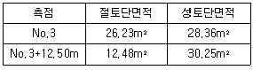
- 387.10m3, 568.10m3
- 568.10m3, 387.10m3
- 366.31m3, 241.94m3
- 241.94m3, 366.31m3
(정답률: 73%)
23. 다음 그림과 같은 4각형의 각 점의 좌표가 표와 같을 때 4각형의 면적은? (단, 단위:m)
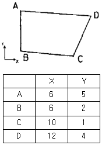
- 20m2
- 18m2
- 16m2
- 14m2
(정답률: 75%)
24. 다음의 하천측량에 대한 설명 중 옳지 않은 것은?
- 평면측량의 범위는 유제부에서 제외지의 30m 정도와 홍수가 영향을 주는 구역보다 약간 넓게 측량한다.
- 1점법에 의한 평균유속은 수면으로부터 수심의 0.6H되는 곳의 유속을 말하며, 5% 정도의 오차가 발생한다.
- 수심이 깊고 유속이 빠른 장소에는 음향측심기와 수압측심기를 사용하며, 음향측심기는 30m의 깊이를 0.5%정도의 오차로 측정이 가능하다.
- 하천측량의 목적은 하천공작물의 계획, 설계, 시공에 필요한 자료를 얻기 위함이다.
(정답률: 75%)
25. 그림과 같은 부지의 측량결과에 의한 토량은?
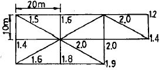
- 1760.03
- 1779.53
- 1786.73
- 3573.33
(정답률: 59%)
26. 그림과 같이 상향 기울기 5/1000, 하향 기울기 35/1000이고 반경 3000m인 곡선 중에서 만날 경우 곡선시점(A)에서 40m 떨어져 있는 점의 종거 y2는?
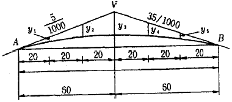
- 167mm
- 267mm
- 367mm
- 467mm
(정답률: 55%)
27. 댐의 변위, 변형측량의 설명 중 틀린 것은?
- 사진측량에 의해 수위에 대한 댐의 변위, 변형측량을 할 수 있다.
- 댐에 설치된 표정점의 좌표를 관측하여 댐의 변위, 변형측량을 할 수 있다.
- 측량망 조정방법은 사진측량에 의한 방법보다 관측시간이 적게 소요되므로 순간적인 변위 및 변형에 유용하게 이용된다.
- 순간변형에 대하여 동시관측 및 반복관측을 통하여 변위량을 알 수 있다.
(정답률: 29%)
28. 하천측량에서 수면으로부터 수심(H)의 0.2H, 0.6H, 0.8H되는 곳의 유속이 각각 0.55m/sec, 0.66m/sec, 0.376m/sec 였다. 다음 중 2점법(V2) 및 3점법(V3)에 의하여 산출한 평균 유속이 맞는 것은?
- V2=0.46 m/sec, V3=0.65 m/sec
- V2=0.46 m/sec, V3=0.56 m/sec
- V2=0.48 m/sec, V3=0.65 m/sec
- V2=0.48 m/sec, V3=0.56 m/sec
(정답률: 67%)
29. 노선측량에서 노선을 선정할 때 가장 우선시 되는 것은?
- 공사기간
- 수송량 및 경제성
- 곡선설치의 난이도
- 용지비와 측량비
(정답률: 73%)
30. 다음 중 면적을 계산할 수 없는 경우는?
- 삼각형 세 변의 길이를 아는 경우
- 네 변의 길이를 알고 있는 사각형
- 각 꼭지점의 좌표를 알고 있는 오각형
- 동일한 변의 길이를 가지는 정육각형
(정답률: 70%)
31. 그림에서 ADB구간에 단곡선을 설치할 때 ∠ADB의 2등분선상 점 C를 곡선중점으로 할 경우, 기점으로부터 곡선종점(E.C.)의 거리는? (단, 기점에서 D점까지의 거리는 380.4m, 외할 E=10.0m, 교각 I=90°이다.)
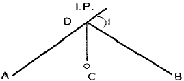
- 358.3m
- 373.1m
- 394.2m
- 401.5m
(정답률: 64%)
32. 유량측정장소의 선정조건에서 잘못된 것은?
- 수면 기울기가 급하거나 완만하지 않은 지점
- 관측장소의 상ㆍ하류의 유속이 일정한 단면을 가진 곳
- 지천의 합류점이나 분류점으로 수위변화가 일어나기 쉬운 지점
- 갈수시에도 관측이 가능한 지점
(정답률: 77%)
33. 터널 갱구를 연결하는 다각측량을 실시하여 A(50,80), B(-100, -200)를 얻었다. A-B측선의 방위각은?
- 40° 25‘ 12“
- 61° 49‘ 17“
- 170° 20‘ 08“
- 241° 49‘ 17“
(정답률: 50%)
34. 확정측량에 대한 설명으로 가장 적합한 것은?
- 시가지 계획을 위한 기초측량이다.
- 구획정리를 하고 환지를 교부하여 토지의 면적을 지적공부에 새로이 등록하는 이동측량이다.
- 토지구획과 형질을 변경한 뒤 새로운 획지에 이전시키는 측량이다.
- 신규측량과 이동측량을 제외한 모든 측량을 말한다.
(정답률: 77%)
35. 고속도로의 완화곡선 설치에는 다음 중 어느 곡선을 많이 이용하는가?
- Sine 곡선
- clothoid 곡선
- 램니스케이트
- 3차 포물선
(정답률: 78%)
36. 중앙종거법에 있어서 장현(L)을 구하는 공식은? (단, R=곡선의 반지름, I=교각[단위는 도(°)])
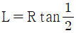
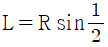
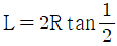
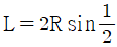
(정답률: 59%)
37. 갱내 A, B의 좌표 A(x=1320.0m, y=810.0m, z=86.30m), B(x=1734.0m, y=589.0m, z=112.40m)되는 두 점을 굴진 하는 경우 A, B점의 경사각은?
- 약 3°
- 약 5°
- 약 7°
- 약 9°
(정답률: 79%)
38. 터널 내외 연결측량에 대한 설명으로 잘못된 것은?
- 수작터널이 낮고 단면이 큰 경우에는 광학적인 방법을 이용하여 충분한 정확도를 얻을 수 있다.
- 터널 내외의 측점 위치관계를 명확하게 하기 위한 목적으로 실시한다.
- 수직터널이 한 개인 경우 수직터널에 한 개의 수선을 내리고 이 수선의 길이와 방위를 관측한다.
- 지하의 터널과 지상의 광산구역경계 및 중요 제점과 어떤 관계가 있는가를 조사하기 위한 측량이다.
(정답률: 31%)
39. 다음의 괄호 안에 들어갈 계획이 순서대로 나열된 것은?
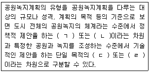
- 정책계획-체계계획-사업계획-조성계획
- 정책계획-조성계획-체계계획-사업계획
- 체계계획-사업계획-정책계획-조성계획
- 사업계획-정책계획-체계계획-조성계획
(정답률: 70%)
40. 축척 1/1000인 지형도를 축척 1/1200 지형도로 잘못 생각하여 삼사법으로 구한 면적이 11520m2일 때 축척 1/1000 지형도의 실제 면적은?
- 8000m2
- 9600m2
- 13824m2
- 16589m2
(정답률: 54%)
3과목: 사진측량 및 원격탐사
41. 수치지형모형(DTM)으로부터 추출할 수 있는 정보로 가장 거리가 먼 것은?
- 경사분석도
- 가시권 분석도
- 사면방향도
- 토지이용현황도
(정답률: 72%)
42. 다음 중 사진의 축척을 일치시키고 경사에 의한 변위를 수정하여 제작한 사진지도 중 등고선이 삽입되지 않은 사진지도는?
- 약집성 사진지도
- 조정집성 사진지도
- 정상투영 사진지도
- 중심투영 사진지도
(정답률: 50%)
43. 지상 사진 측량에 대한 설명으로 가장 거리가 먼 것은?
- 촬영위치를 알고 행하는 전방교회법이라 할 수 있다.
- 항공사진에 비해 촬영방향에 대한 정확도가 현저히 낮다.
- 항공사진에 비해 기상의 영향이 크게 좌우하지 않는다.
- 지상사진기는 렌즈의 수차가 작아야 하며 보통각사진기가 많이 쓰인다.
(정답률: 57%)
44. 항공사진에 나타난 건물 정상(頂上)의 시차(parallax)를 측정하니 6.00cm이고 건물의 밑부분의 시차는 5.97cm이었다면 이 건물의 높이는? (단, 이 건물의 밑부분을 기준면(基準面:reference plane)으로 한 촬영고도는 3000m이다.)
- 5.0m
- 7.5m
- 10.0m
- 15.0m
(정답률: 22%)
45. 다음 중 표정점의 선점에 관한 내용으로 틀린 것은?
- 굴뚝과 같이 지표면보다 뚜렷하게 높은 곳에 있는 점이어야 한다.
- 상공에서 보이지 않으면 안된다.
- 가상점, 가상상을 사용하지 않도록 한다.
- 표정점은 X, Y, Z 가 동시에 정확하게 결정될 수 있는 점이 이상적이다.
(정답률: 65%)
46. 한 쌍의 사진을 좌우로 실제보다 더 떼어놓고 실체시 하는 경우 지면의 기복은 어떻게 변화하는가?
- 고저를 분별하기 힘들다.
- 과고감이 커진다.
- 과고감이 적어진다.
- 높은 곳이 더 낮게 보인다.
(정답률: 65%)
47. 공간해상도가 높은 영상을 이용하여 해상도가 낮은 영상의 해상도를 높이는 기법은?
- 해상도 병합
- 영상 모자이크
- 영상 피라미드
- 영상 기하 보정
(정답률: 77%)
48. 벡터구조로서 지형데이터의 표현을 위한 위상을 갖추고 있는 수치표고자료의 표현방식은?
- 불규칙삼각망(TIN)
- 수치고도모형(DEM)
- 수치표면모형(DSM)
- 수치선형그래프(DLG)
(정답률: 50%)
49. 영상자료의 저장방식에 해당 되지 않는 것은?
- BBC(Band Block Code)
- BIL(Band Interleaved by Line)
- BSQ(Band Sequential)
- BIP(Band Interleaved by Pixel)
(정답률: 77%)
50. 다음의 지리정보체계의 자료취득 방법 중 자료성격이 다른 방법은?
- 항공사진
- 인공위성영상
- 디지타이징
- 스캐닝
(정답률: 59%)
51. 편위수정기로 항공사진을 해석적 편위수정할 때 최소 몇 점의 기준점이 필요한가?
- 2점
- 4점
- 8점
- 10점
(정답률: 67%)
52. 보기의 자료 취득 과정에서 발생하는 오차 중 디지타이징에 의한 오차(오류)로만 옳게 짝지어진 것은?
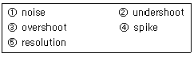
- ①, ②
- ③, ④, ⑤
- ④, ⑤
- ②, ③, ④
(정답률: 63%)
53. 항공사진의 내부표정시 고려해야 할 사항이 아닌 것은?
- 사진기 렌즈의 왜곡에 의한 오차
- 대기굴절에 의한 오차
- 지구곡률에 의한 오차
- 지상기준점의 오차
(정답률: 22%)
54. 다음 중 벡터방식과 비교할 때 래스터(격자)방식의 장점으로 볼 수 없는 것은?
- 쟈료의 구조가 단순하다.
- 레이어의 중첩이나 분석이 용이하다.
- 속성정보의 추출 및 갱신이 용이하다.
- 3차원 지형 시뮬레이션 등이 용이하다.
(정답률: 50%)
55. GIS의 분석방법 중 교통로와 도시팽창 지역 사이의 관계를 설명하기 위해 사용하는 방법으로 가장 적합한 것은?
- 면 사상 간의 중첩
- 면 사상과의 점 사상의 중첩
- 버퍼 분석
- 면 사상과 선 사상의 중첩
(정답률: 67%)
56. 축척이 서로 다른 주 장의 광각사진(A, B) 상에 지상 10m의 교량이 각각 1mm(A)와 2mm(B)로 나타났다면 이 두 사진 A, B의 축척비(A:B)는?
- 2:1
- 4:1
- 1:2
- 1:4
(정답률: 55%)
57. 사진상의 주점이나 표정점 등 제점의 위치를 인접한 사진상에 옳기는 작업은?
- 점이사
- 점수정
- 점인접
- 점이동
(정답률: 70%)
58. 편위수정에 있어서 만족해야 할 3가지 조건으로 옳지 않은 것은?
- 소실점의 조건
- Newton의 조건
- 샤임플러그의 조건
- 공선조건
(정답률: 47%)
59. 축척 1/24,000의 항공사진을 C 계수가 1,200인 도화기로 도화작업할 때 신뢰할 수 있는 최소 등고선간격은? (단, 사진의 초점거리는 200mm 임)
- 2m
- 3m
- 4m
- 5m
(정답률: 64%)
60. 주점거리가 160mm인 사진기로 비고 640m 지점의 대상물을 1/12000 사진축척으로 촬영한 연직사진이 있다. 촬영고도는 얼마인가?
- 2360m
- 2460m
- 2560m
- 2660m
(정답률: 73%)
4과목: 지리정보시스템
61. 등고선에 관한 다음 설명 중 틀린 것은?
- 등고선 간의 최단거리 방향은 최대 경사방향을 나타낸다.
- 높이가 다른 등고선은 절대로 서로 교차하지 않는다.
- 등고선이 도면 내에서 폐합하는 경우 등고선의 내부에는 산꼭대기 또는 분지가 있다.
- 등고선은 분수선과 직각으로 만난다.
(정답률: 74%)
62. 다음 중 경거 및 위거의 직접적인 용도와 가장 거리가 먼 것은?
- 실측도의 좌표계산
- 오차 및 정확도 계산
- 측점의 표고계산
- 오차의 합리적 배분
(정답률: 70%)
63. 평판측량에서 중심맞추기 오차(편심거리)를 30mm, 도상위치 오차를 0.2mm로 할 때 축척한계는?
- 1/100
- 1/150
- 1/300
- 1/600
(정답률: 47%)
64. 평판측량에 관한 다음 사항 중 옳지 않은 것은?
- 평판측량은 보통 방사법, 전진법, 교회법 등의 방법을 병용하는 것이 능률적이다.
- 폐합오차의 허용 범위는 도면 위에서
 이내이다.(nm=트래버스변의 수)
이내이다.(nm=트래버스변의 수) - 평판측량에서 결과에 가장 영향을 주는 오차ㅑ는 중심맞추기 오차(구심오차)이다.
- 오차는 거리에 비례하여 배분한다.
(정답률: 38%)
65. 두 점간의 고저차를 구하기 위하여 경사거리 30.0mm±20cm 경사각 15° 30‘의 값을 얻었다. 경사거리와 경사각이 고저차 결정의 독립변수로 작용할 때 고저차의 오차는?:
- ±5.3cm
- ±10.5cm
- ±15.8cm
- ±27.6cm
(정답률: 17%)
66. 수준기의 관형 기포관 눈금을 8눈금 이동하였더니 60m 떨어진 표척의 읽음값이 0.046m 변화하였다. 이 수준기의 감도는?
- 10“
- 20“
- 30“
- 40“
(정답률: 70%)
67. 그림과 같이 A점에서 D점에 이르는 도중 폭 약 300m의 하천이 있어서 P점 및 Q점에 레벨을 설치하여 교호 수준측량을 실시하였다. A점으로부터 D점에 이르는 각 측점에서 전후 표척의 독치차가 다음과 같을 때 D점의 표고는? (단, A점의 표고는 30m이다.)
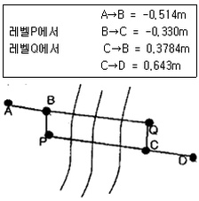
- 29.777m
- 30.481m
- 31.509m
- 32.519m
(정답률: 60%)
68. 우리나라의 1/25,000 지형도에서 간곡선에 대한 설명으로 옳은 것은?
- 가는 파선이고 5m 간격이다.
- 가는 파선이고 10m 간격이다.
- 가는 실선이고 5m 간격이다.
- 가는 실선이고 10m 간격이다.
(정답률: 64%)
69. 직접법으로 등고선을 관측하기 위하여 B점에 레벨을 세우고 표고가 53.85m인 P점에 세운 표척을 시준하여 1.28m를 얻었다. 50.25m인 등고선 위의 점 A를 정하려면 시준하여야 할 표척의 높이는?
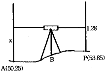
- 1.28m
- 2.32m
- 3.60m
- 4.88m
(정답률: 20%)
70. A, B 두 점간의 고저차를 구하기 위하여 그림과 같이 (1), (2), (3) 코스로 수준측량한 결과가 다음과 같을 때 두 점간의 고저차에 대한 최확값은?
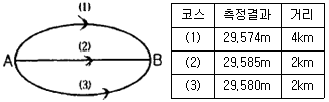
- 29.567m
- 29.581m
- 29.569m
- 27.578m
(정답률: 59%)
71. 특별기준면에 대한 설명으로 옳은 것은?
- 섬이나 하천에서 사용하기 위해 따로 만든 기준면
- 특별히 높은 정확도의 측량으로 만든 기준면
- 서울특별시 건설에 사용되는 기준면
- 우리나라 5개 수준면 중 대표가 되는 기준면
(정답률: 67%)
72. 오차의 설명 중 틀린 것은?
- 과대오차는 관측자의 부주의나 측량방법을 잘못 적용함
- 크기와 방향을 알 수 있는 오차를 정오차라 한다.
- 정오차는 상차라고도 한다.
- 우연오차는 발생빈도, 크기, 부로 등을 전혀 알 수 없으며 예측할 수도 없는 무작위성 오차이다.
(정답률: 65%)
73. 지형의 표시법을 올바르게 설명한 것은?
- 음영법-등고선의 사이를 같은 색으로 칠하여 색으로 표고를 구분하는 방법
- 우모선법-짧고 거의 평행한 선을 이용하여 선의 간격, 굵기, 길이, 방향 등에 의하여 지형의 기복을 표시하는 방법
- 채색법-특정한 곳에서 일정한 방향으로 평행광선을 비칠 때 생기는 그림자를 바로 위에서 본 상태로 기복의 모양을 표시하는 방법
- 등고선법-측점에 숫자를 기입하여 지형의 높낮이를 표시하는 방법
(정답률: 65%)
74. 삼각망에 대한 특징을 잘못 설명한 것은?
- 단열삼각망은 같은 거리에 대하여 측점수가 가장 적으므로 측량은 간단하여 경제적이나 조건식의 수가 적어서 정밀도가 낮다.
- 사변형삼각망은 조건식의 수가 많아서 다른 삼각망에 비해 정밀도가 가장 높다.
- 유심삼각망은 면적이 넓고 광대한 지역의 측량에 좋다.
- 사변형삼각망은 폭이 좁고 길이가 긴 도로, 하천, 철도 등의 측량을 시행할 경우에 주로 사용된다.
(정답률: 70%)
75. 트래버스측량의 각 관측 기하학적 조건과 비교하여 허용오차 이내일 경우의 오차배분에 대한 설명 중 잘못된 것은?
- 각 관측의 정확도가 같을 땐즌 오차를 각의 대소에 관계없이 등분하여 배분한다.
- 각 관측의 경중률이 다를 경우에는 그 오차를 경중률에 따라 배분한다.
- 각 관측은 경중률이 같을 경우에는 각의 크기에 비례하여 배분한다.
- 변길이의 역수에 비례하여 각 관측각에 배분한다.
(정답률: 22%)
76. 다음은 전자파 거리 측정기를 사용하여 측정한 결과이다. 교차의 제한을 10mm+D×2mm (D : km 단위)로 할 경우 다음 중 옳은 것은? (단 D는 4km임)
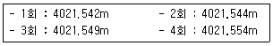
- 1회만 재측한다.
- 1회와 2회를 재측한다.
- 4회만 재측한다.
- 재측할 필요가 없다.
(정답률: 54%)
77. 평면측량(국지측량)에 대한 정의로 가장 적합한 것은?
- 대지측량을 제외한 모든 측량
- 측량법에 의하여 측량한 결과가 작성된 성과
- 측량할 구역을 평면으로 간주할 수 있는 국지적 범위의 측량
- 대지측량에 비하여 비교적 좁은 구역의 측량
(정답률: 60%)
78. 축척 1/500 지형도를 기초로 하여 축척 1/3000의 지형도를 제작하고자 한다. 1/3000 지형도 1도엽은 1/500 지형도를 몇 매 포함한 것인가?
- 45매
- 40매
- 36매
- 25매
(정답률: 58%)
79. 토탈스테이션(T.S)을 사용하여 길이 6500m인 측선을 측설할 때 거리에는 오차가 없고 방향에 5“의 오차가 있다면 이로 인한 위치 오차는?
- 15.2cm
- 15.8cm
- 16.4cm
- 16.9cm
(정답률: 40%)
80. 표준오차를 이용하여 표시한 최확값이 400.00±0.02m일 때 확률오차를 이용한 정확도는 약 얼마인가?
- 1/10,000
- 1/20,000
- 1/30,000
- 1/40,000
(정답률: 67%)
5과목: 측량학
81. 측량업의 등록사항 중 상호가 변경되었을 때 변경 등록기간의 기준으로 옳은 것은?
- 변경이 있은 날로부터 20일 이내
- 변경이 있은 날로부터 7일 이내
- 변경이 있은 날로부터 60일 이내
- 변경이 있은 날로부터 30일 이내
(정답률: 67%)
82. 기본측량의 성과를 외국으로 반출하고자 하는 경우 국외반출허가신청서에 첨부하여야 할 서류가 아닌 것은?
- 보안각서
- 외국인인 경우 여권사본
- 반출할 내용물
- 내국인인 경우 호적등본
(정답률: 73%)
83. 공공측량의 기준에 대한 설명으로 옳은 것은?
- 일반측량의 측량성과를 기초로 하여 실시한다.
- 기본측량 또는 다른 공공측량의 측량성과를 기초로 하여 실시한다.
- 기본측량의 측량성과만을 기초로 하여 실시한다.
- 일반측량, 기본측량 또는 다른 공공측량의 측량성과를 기초로 하여 실시한다.
(정답률: 67%)
84. 기본측량에 관한 장기 계획은 누가 수립하는가?
- 건설교통부장관
- 국토지리정보원장
- 서울특별시장, 광역시장, 도지사
- 시장, 군수
(정답률: 34%)
85. 측량법에서 정의한 측량성과란?
- 당해 측량에서 얻은 지형측량의 최종성과만을 말한다.
- 당해 측량에서 얻은 최종결과를 말한다.
- 당해 측량에서 얻은 삼각점의 최종결과치만을 말한다.
- 당해 측량에서 얻은 수준점의 최종결과치만을 말한다.
(정답률: 64%)
86. 국토지리정보원장이 간행하는 지도의 축척으로 옳은 것은?
- 1/500
- 1/1000
- 1/1500
- 1/2000
(정답률: 28%)
87. 다음 투영 중 1:50,000 국토기본도에서 적용하고 있는 것은?
- 원주(圓柱)
- 횡단머케이트(T.M)
- 만국횡단머케이트(U.T.M)
- 람벨트(Lambelt)
(정답률: 59%)
88. 기본측량의 실시에 관한 설명으로 바르지 못한 것은?
- 국토지리정보원장은 기본측량실시로 인하여 손실을 받은 자가 있을 때에는 그 손실을 보상하여야 한다.
- 기본측량을 실시하기 위하여 필요하다고 인정하는 경우에는 토지, 건물, 죽목을 수용하거나 사용할 수 있다.
- 기본측량을 위하여 토지 등에 출입할 수 있는 권한을 표시하는 증표에 관하여 필요한 사항은 대통령령으로 정한다.
- 타인의 토지나 건물에 출입하고자 하는 자는 그 권한을 표시하는 증표를 지니고 관계인에게 제시하여야 한다.
(정답률: 54%)
89. 측량업 등록의 결격사유를 설명한 내용으로 옳지 않은 것은?
- 파산자로서 복권되지 아니한 자
- 금치산 또는 한정치산의 선고를 받은 자
- 측량법을 위반하여 금고이상의 형의 선고를 받고 형의 집행유예 기간 중에 있는 자
- 국가보안법의 죄를 범하여 금고이상의 형의 선고를 받고 그 집행을 받지 아니하기로 확정된 후 3년이 경과되지 않은 자
(정답률: 50%)
90. 측량업 등록 신청서에 필요한 첨부 서류가 아닌 것은?
- 장비를 갖춘 사실을 증명하는 서류
- 법인인 경우 등기부등본
- 측량기술자의 고용계약서
- 기술능력을 갖춘 사실을 증명하는 서류
(정답률: 70%)
91. 다음 중 공공측량 및 일반측량에서 제외되지 않는 측량은 어느 것인가?
- 수로업무법에 의한 수로측량
- 국지적 측량 또는 고도의 정확도를 필요로 하지 아니하는 측량
- 측량노선의 길이가 10km 이상인 수준측량, 다각측량
- 지적법에 의한 지적측량
(정답률: 36%)
92. 우리나라 지도의 주기에 사용할 수 있는 문자를 모두 나타낸 것은?
- 한글, 아라비아 숫자
- 한글, 한자, 아라비아 숫자
- 한글, 영자, 아라비아 숫자
- 한글, 한자, 영자, 아라비아 숫자
(정답률: 59%)
93. 세계측지계의 요건으로 옳지 않은 것은?
- 회전타원체의 편평률은 299.1528136분의 1
- 회전타원체의 장반경은 6,378,137미터
- 회전타원체의 단축이 지구의 자전축과 일치할 것
- 회전타원체의 중심은 지구의 질량중심과 일치할 것
(정답률: 55%)
94. 다음 중 측량협회 임원(회장, 부회장, 이사 및 감사)의 임기를 규정하는 것은?
- 측량법
- 측량법 시행령
- 측량법 시행규칙
- 협회의 정관으로 별도 정함
(정답률: 50%)
95. 측량업의 등록을 취소시킬 수 있는 사항이 아닌 것은?
- 다른 사람에게 자기의 등록증을 대여한 때
- 허위 기타 부정한 방법으로 등록을 할 때
- 정당한 사유 없이 등록을 한 날부터 6개월 이내에 영업을 개시하지 아니한 때
- 다른 사람에게 자기의 등록수첩을 대여한 때
(정답률: 67%)
96. 다음 중 관할구역 안에 있는 기본측량을 위하여 설치한 측량표를 감시하여야 하는 자는?
- 도지사
- 국토지리정보원장
- 군수
- 경찰청장
(정답률: 19%)
97. 건설교통부장관 및 국토지리정보원장의 권한을 협회에 위탁한 내용으로 옳은 것은?
- 측량기기의 성능검사
- 기본측량의 실시에 관한 통지
- 공공측량 측량기록사본의 제출요구
- 공공측량의 심사
(정답률: 46%)
98. 측량법상의 벌칙 중 3년 이하의 징역 또는 3000만원 이하의 벌금에 처하는 것이 아닌 것은?
- 미리 조작한 가격으로 입찰한 자
- 다른 사람의 견적의 제출 자
- 부정한 방법으로 측량업의 등록을 한 자
- 입찰행위를 방해한 자
(정답률: 54%)
99. 다음 중 지도도식규칙의 적용 대상이 되지 못하는 것은?
- 기본측량 및 공공측량의 성과로서 지도를 간행하는 경우
- 기본측량 및 공공측량의 성과를 직접 이용하여 지도에 관한 간행물을 발간하는 경우
- 기본측량 및 공공측량의 성과를 간접으로 이용하여 지도에 관한 강행물을 발간하는 경우
- 기본측량 및 공공측량의 성과로서 군용지도를 조제하는 경우
(정답률: 70%)
100. 측량법에서 정의한 측량업의 종류에 속하지 않는 것은?
- 측지측량업
- 연안조사측량업
- 지도제작업
- 지적측량업
(정답률: 75%)